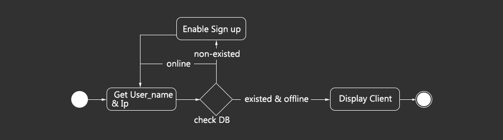

This software is designed by Aleen.
1. How does it work?
Simply, it contains two components which all Chats should have. One is the Server, and the other is the Client.
1.1 The Server
Here I have used an activity diagram to describe how the Server works when I try to start a server.
From the start point, the Server will get your input of port and the limited of online users. After checking your input whether they are legal, Start Button will be enable for you as long as they are legal. At that moment, just click the Start Button to start the server.
When the Start Button is clicked, the server will create a thread called ServerThread, which will create ServerSocket and accept clients to connect. Once a client connects to this socket, the server will create a thread called ClientThread, which is used to serve the client. This ClientThread will be put into an ArrayList, Clients. At the same time, ADD label message will be sent to other clients, updating online list.
Then, I would like to talk about how ClientThread serves the client, mainly handling messages from clients.

Here, I have designed three labels for all the messages from Clients: CLOSE, PUBLIC_MESSAGE and PRIVATE_MESSAGE.
i. CLOSE: Means that the Client would like to disconnect.
The Server will handle it by release relative resources for this client, and stop the ClientThread of this client, removing it from the ArrayList, Clients, at the same time. What another thing the Server will do is to send DELETE label message, telling other clients to update online list.
ii. PUBLIC_MESSAGE: Means that a client would like to send messages to all other online users.
The Server will handle it by delivering it to all clients through ClientThread in the ArrayList, Clients.
iii. PRIVATE_MESSAGE: Means that a client would like to send private messages to the specifical online users.
The Server will first extract the username, des_username, and its IP address, des_ip. Then, it will go through all ClientThread in the ArrayList, Clients, to match. When found, messages will be delivered to it.
1.2 The ClientFor the Client, first you must login. I just use user_name and ip_address to authorize a user.
First, the Client will get your input User_name and IP. After connecting to the SQLServer(DB), it will check whether the user with this ip is existed and offline. If non-existed, it will enable you to sign up, and if it's existed but online, it will mention you that the user is already online.
Message Handling is familiar with the Server. 4 Labels: CLOSE, MESSAGE, ADD and DELETE are designed.
i. CLOSE: Means that the Server ask you to disconnect.
When the Server sends a CLOSE label message to you, you are asked to disconnect passively.
ii. MESSAGE: Means that a message is delivered to the client.
The client will extract the message, and display it on the screen.
iii. ADD: Means that a client is online, and make you to update online users.
iv. DELETE: Means that a client is offline, and make you to update online users.
2. Some GUI Design Skills with Java
2.1 Borderless StylesetUndecorated(true);//make OS default border disappearAWTUtilities.setWindowOpaque(this, false); //make JFrame to be a transparent one
/* Background */
Image bg = this.getToolkit().getImage("./Pic/bg.png"); //Get Image
contentPane = new Background(bg); //Set Background as a Pane
setContentPane(contentPane); //Set Contentpublic class Background extends JPanel
{
private Image img;
public Background(Image img)
{
this.img = img;
/* Ensure that the whole image is drew */
Dimension size = new Dimension(img.getWidth(null),img.getHeight(null));
setSize(size);
setPreferredSize(size);
setMinimumSize(size);
setMaximumSize(size);
setLayout(null); //Set the LayoutManager as null
}
/* Override paintComponent of JPanel to draw background */
public void paintComponent(Graphics g)
{
g.drawImage(img, 0, 0, null);
}
}/* Close Button */
ImageIcon close_button_bg = new ImageIcon("./Pic/closebutton_static.png");
ImageIcon close_button_mouseover = new ImageIcon("./Pic/closebutton_mouseover.png");
ImageIcon close_button_pressed = new ImageIcon("./Pic/closebutton_pressed.png");
/* Initialize Button */
Close_Button = new Button(close_button_bg, close_button_mouseover, close_button_pressed, 0);
Close_Button.setOpaque(false);
Close_Button.setBounds(379, 4, 28, 28);
Close_Button.addActionListener(new ActionListener()
{
public void actionPerformed(ActionEvent arg0)
{
System.exit(0);
}
});
/* Add Button to the main Pane */
contentPane.add(Close_Button);public class Button extends JButton
{
Button(ImageIcon icon, ImageIcon mouseover, ImageIcon pressed, int type)
{
/* Static style */
setSize(icon.getImage().getWidth(null),icon.getImage().getHeight(null));
setIcon(icon);
/* Reset the default style of buttons */
setMargin(new Insets(0,0,0,0));
setIconTextGap(0);
setBorderPainted(false);
setBorder(null);
setText(null);
/* Add mouse listener */
addMouseListener(new MouseAdapter()
{
public void mouseEntered(MouseEvent e)
{
setIcon(mouseover); //Set mouseover_icon when the mouse is over
}
public void mouseExited(MouseEvent e)
{
setIcon(icon); //Set static_icon when the mouse leaves
}
public void mousePressed(MouseEvent e)
{
setIcon(pressed); //Set pressed_icon when the mouse is pressed
}
public void mouseReleased(MouseEvent e)
{
/* Set different types of icons when the mouse is released */
switch(type)
{ //Based on what you want when mouse is pressed, dragged out and released
case 0:
setIcon(icon);
break;
case 1:
setIcon(mouseover);
break;
default:
break;
}
}
});
}
}private int point_x, point_y; //Store the position of the mouse
private boolean isDragging = false; //Become true when dragging
/* Listen to the Mouse Clicking */
addMouseListener(new MouseAdapter()
{
public void mousePressed(MouseEvent e)
{
isDragging = true;
point_x = e.getX(); //Get axis X of the mouse
point_y = e.getY(); //Get axis Y of the mouse
}
public void mouseReleased(MouseEvent e)
{
isDragging = false;
}
});
/* Listen to the Mouse Dragging */
addMouseMotionListener(new MouseMotionAdapter()
{
public void mouseDragged(MouseEvent e)
{
if (isDragging)
{
int left = getLocation().x; //Get axis X of the window
int top = getLocation().y; //Get axis Y of the window
setLocation(left + e.getX() - point_x, top + e.getY() - point_y);
}
}
}); To be frank, it's not easier to design delicate desktop software with Java than with C# + XAML. However, SwingC, an open resource, can help you to design different components.
3. Summary
SimpChat is just a software, designed to learn how Socket works. If there are any problems which you would like to communicate with me, Just send me a email: 408503598@qq.com. I am waiting for your voice.